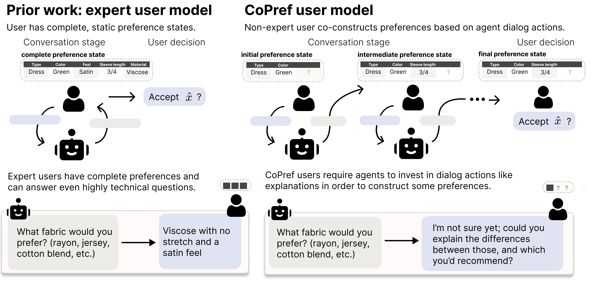
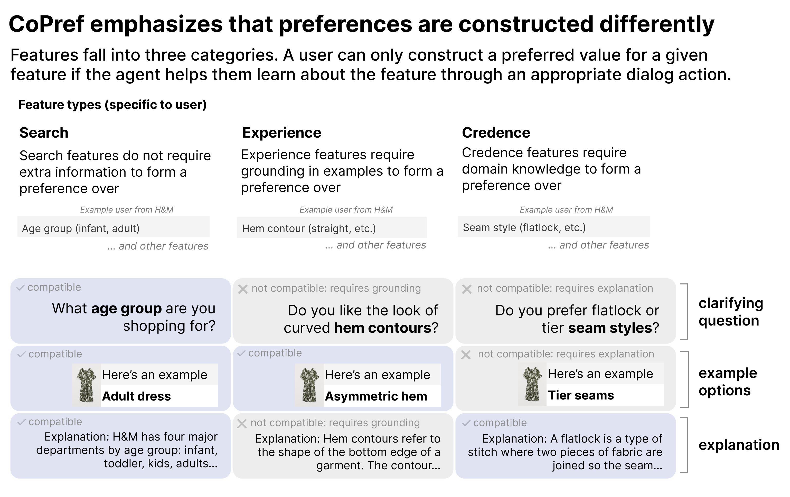
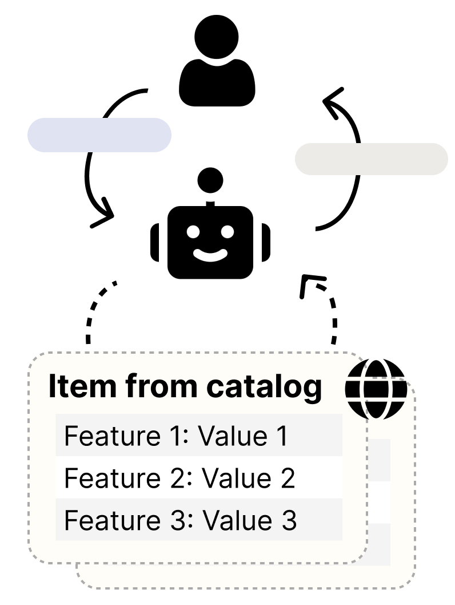
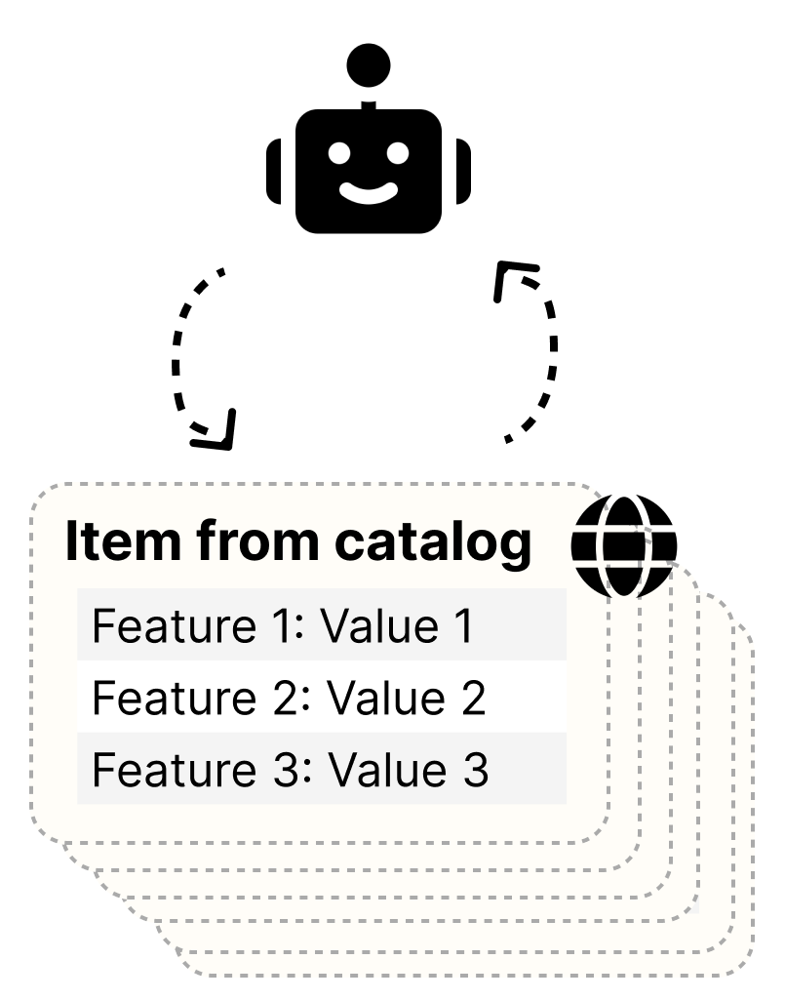
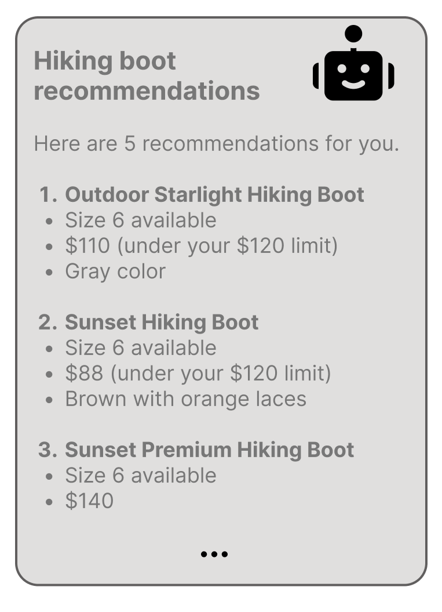
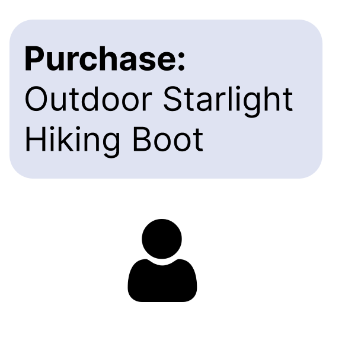
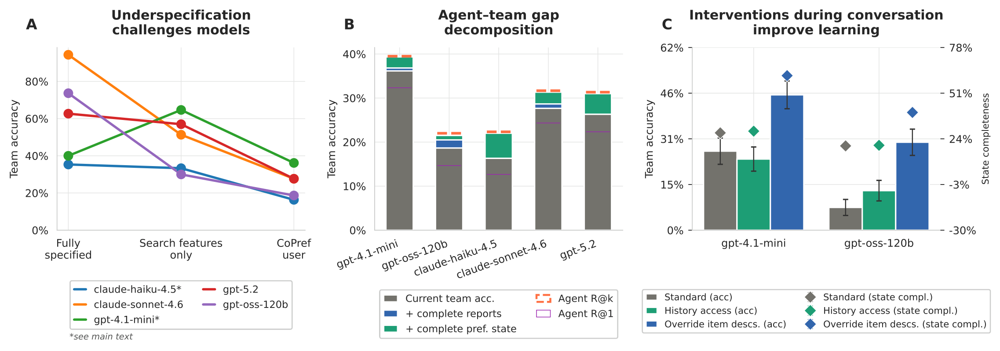

CoShop is an interactive benchmark for agentic recommender systems that must help non-expert users construct their preferences — not just elicit them — before making a recommendation.
Agents typically assume an expert user — one with well-formed preferences about what they want — and default to clarifying questions whenever the task is underspecified. We argue this assumption is unrealistic. Users often lack the domain knowledge to have completely specified preferences; if asked about their preference on some feature, the user may be unable to answer without the agent teaching some domain knowledge needed to form a preference for that feature, e.g., via examples or explanations.
To formalize these principles, we draw on the Search-Experience-Credence framework from Information Economics to introduce CoPref, a model of how users construct preferences based on agent dialog actions. We then study these ideas concretely in agentic recommender systems, proposing CoShop, an interactive benchmark. In CoShop, an agent converses with and makes recommendations for a CoPref user. The agent's performance depends on whether it can help the user gain the knowledge needed to specify the task well.
Evaluating five frontier models, we find that no agent exceeds 56% accuracy on CoShop despite five turns of interaction. Failures stem not from agents' ability to find items, but from how little the interaction expands what users know about what they want.
Rather than assume an expert user with static, well-formed preferences, CoShop models a CoPref user who constructs preferences in response to the agent's dialog actions[1][2]. The agent's job is to teach — through examples and explanations, not just questions — until the user can form a preference at all.

The Search–Experience–Credence (SEC) framework from information economics[3][4] partitions features by how a user forms a preference: search features need only a clarifying question, experience features need example options, and credence features need a technical explanation. Each dialog action only unlocks features of its matching type.

CoShop covers three product domains sourced from real human–product interactions. Each test user has a personalized SEC split and an initial preference state S₁. Browse real samples below.
mean (std) across 100 test users
share across 100 users — the same feature varies by user

The agent converses with a CoPref user for up to five turns, calling a catalog-search tool under budget.

The agent searches the catalog more thoroughly with an expanded retrieval budget.

The agent writes up its final k = 5 recommendations.

The user picks one item, evaluating it against their final, co-constructed preference state.
The coshop Python package provides everything a rollout needs (the simulated
CoPref user, the three datasets, retrieval tools, and the
metrics) so you can drop in your own model or agent harness.
A recommendation is only useful if the user can actually recognize and choose it. So CoShop's
primary metric is team accuracy: after the agent delivers its report of
k = 5 items, the simulated user picks one item x̂, and we ask whether
x̂ matches the target x* — evaluated against the user's final
preference state, not the agent's internal beliefs.
Whether the target x* appears anywhere in the agent's report. Measures pure
retrieval — the agent's ability to surface the right item.
Whether the user's selected item x̂ equals x*. The user can only
break ties among the k items as well as their constructed preference state allows.
This gap is the whole point. If the user's preference state S isn't rich enough to
distinguish the target from its k−1 distractors, a perfect report still fails at
selection. Team accuracy is therefore consistently — and substantially — lower than agent recall:
gpt-5.2 scores 65% recall@k on the fashion task but only 56% team accuracy. Evaluating
the team stresses what matters: did the interaction actually teach the user enough to
choose well?
Agents excel at search but fail to resolve underspecification.
Given the user's full preference set upfront, models score highly. E.g.,
claude-sonnet-4.6 averages 94.3% across datasets (gpt-4.1-mini and claude-haiku-4.5 hit context limit errors). But every model drops when faced with CoPref users.
It matters that not all features can be elicited via simple questions:
gpt-5.2 scores 57.0% when all features are
search features, but only 27.7% with the full SEC framework, where some features need example options
or explanations rather than clarifying questions.
Team accuracy reveals human-facing failures.
Team accuracy runs consistently below agent recall@k — even when the agent surfaces x*,
users often can't break ties with the other k−1 options
(gpt-5.2: 65% recall@k vs. 56% team accuracy on fashion). The gap has two sources:
(1) poor report quality, where agents write bad summaries of products for the user to review, and (2) underdeveloped preference states,
where agents failed to help users learn about discriminative features.
Interventions on agent knowledge and communication.
Giving agents the user's prior rating history yields minimal gains. But crudely overriding
agents' item descriptions to mention all catalog features produces substantial improvements —
gpt-4.1-mini's team accuracy from
36% to 46%. This reflects that agents fail to proactively surface features the user may not have considered,
preferring to rehash already-known ones when describing options.

Models rely on questions and examples but never explain, and these actions are often
ineffective. 20% of gpt-5.2's questions only confirm preferences the user already
stated. Some models show items that aren't in the catalog (claude-haiku-4.5 in
47% of conversations), and examples often omit features, so they don't grow the user's state.
Across most models, requests for more detail tend to repeat known features rather than
introduce new ones (35% of gpt-4.1-mini's conversations).
| Model | Budget utilization (median) | Behavior frequency (avg) | ||||
|---|---|---|---|---|---|---|
| Questions | Examples | Explanations | Confirm. Qs | Loops | Hallucinations | |
| claude-haiku-4.5 | 9.50 | 6.33 | 0.00 | 0.10 | 0.24 | 0.47 |
| claude-sonnet-4.6 | 8.17 | 5.33 | 0.00 | 0.10 | 0.15 | 0.00 |
| gpt-4.1-mini | 7.58 | 7.75 | 0.00 | 0.07 | 0.35 | 0.01 |
| gpt-5.2 | 9.00 | 6.00 | 0.00 | 0.20 | 0.03 | 0.00 |
| gpt-oss-120b | 6.50 | 4.67 | 0.00 | 0.06 | 0.20 | 0.31 |
Budget-utilization columns are medians; behavior columns are per-conversation averages. No model ever provides explanations for technical features.
Clarifying questions asked by gpt-5.2 on a MovieLens task — 14 of 20 are
confirmation questions (highlighted): they re-confirm or
probe the flexibility of a requirement the user already stated.
These are both cognitively demanding and less discriminative than exploring new features.
(1) Is your ideal tone closer to (A) Nine to Five (snappy, “team vs. boss”) or (B) Steel Magnolias (warm, friendship + tears)? (2) When you say “adult female lead,” is late 20s+ required, or would an older teen/college-age lead still be okay if the ensemble team vibe is strong? (3) Should the “mild action” be almost none (mostly dialogue/comedy), or is light chase/physical comedy okay? (4) Any strong preference for PG vs PG-13, or either is fine as long as it's not R? (5) Do you want the ensemble to be mostly women, or is mixed-gender fine?
(6) Is “mystery/thriller” a hard requirement (primary genre), or just a strong preference? (7) Is “survival plot” a hard requirement (characters trapped / hunted / must endure), or were you using “survival” more loosely? (8) For the “ensemble team vibe,” do you mean a group solving the central mystery together, or is it okay if the lead drives the case with a strong supporting cast?
(9) Is comedy actually desired (“mystery-comedy” / “comedic thriller”), or are you fine with a straight thriller as long as the ensemble mystery-solving is present? (10) How strict is the “strong adult female lead” requirement versus simply having an ensemble with at least one prominent adult woman?
(11) What does “popularity above average” mean to you in practice? (12) Would you consider Clue's popularity score “above average” already, or do you want something higher? (13) Would you accept “high vote count + decent rating” as the definition of “popular”? (14) How strict is “strong adult female lead” in a true ensemble? (15) Do you prefer Option A (strict), where the central driver must be an adult woman, or Option B (moderate), where she is one of the top central figures?
(16) When you say “survival-style,” do you mean A. literal survival (trapped/disaster), B. on-the-run / being targeted, or C. lighter “we might get caught/exposed” stakes? (17) Do you want the ensemble to be a team that already exists, or is it okay if strangers get pulled into the same danger/mystery? (18) Are you still set on US-made productions, or would you accept US/UK co-productions if they otherwise match perfectly?
(19) Does the “survival/on-the-run” requirement need to be explicitly tagged as “survival,” or is it enough that the overview implies the characters are being targeted or chased? (20) How strict should the box-office floor be if revenue is sometimes missing — must it be listed and at least about $13 million, or can it be missing as long as other indicators of success are present?
The coshop Python package provides dataset loading, simulated CoPref users,
retrieval tools, and metrics. Full API reference is generated from the source docstrings.
@misc{saracay2026beyond,
title={Beyond expert users: agents should help users construct preferences, not just elicit them},
author={Irena Saracay and Ludwig Schmidt and Carlos Guestrin},
year={2026},
archivePrefix={arXiv},
primaryClass={cs.AI},
}